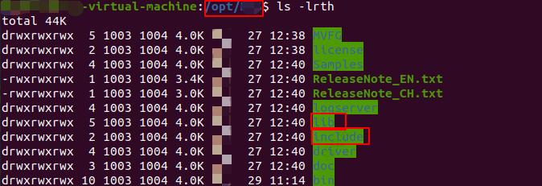
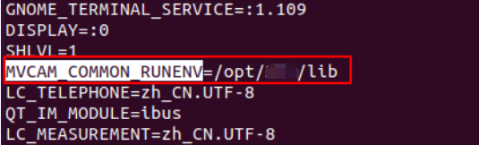

Before you start secondary development, configure the development environment accordingly, and introduce the SDK to your project.
Development Environment Requirements
Make sure the development environment meets the following requirements:
-
Installed GCC/G++ 4.8.5 or later, and make command.
-
Installed the client.
-
Introduce the SDK header files to your project.
The header file is located under the folder /opt/(client installation path)/include.

Use “-I” command to specify the header file path.
-
Introduce header file via absolute path:
-I/opt/(client installation path)/include/
-
Introduce header file via relative path of the current project and include directory:
-
Introduce the SDK library file to your project.
The library file is located under folder /opt/ (client installation path) /lib after installing the client.
- Note
- Use the env command to check the environment variables, as shown below.

Use “-Wl,-rpath” specify the library file directory, and link to the library file through “-L” command.
-
Introduce library file through absolute path:
-Wl,-rpath=/opt/ (client installation path) /lib/64 -L/opt/ (client installation path) /lib/64 –lMvCameraControl
-
Introduce library file through environment variables:
-Wl,-rpath=$(MVCAM_COMMON_RUNENV)/64 -L$(MVCAM_COMMON_RUNENV)/64 –lMvCameraControl
-
Compile the program through make command.